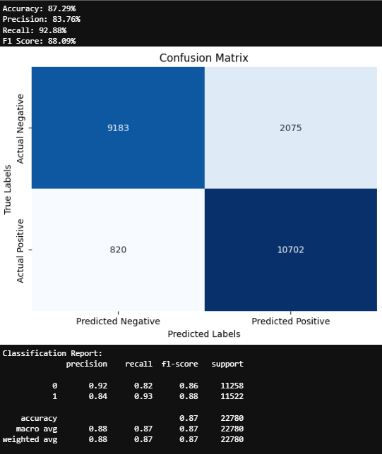
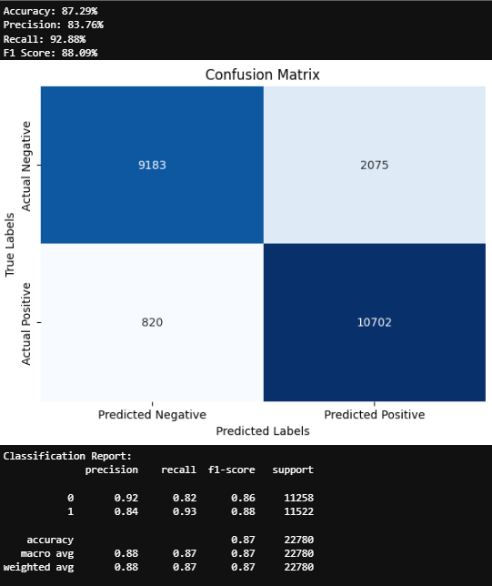
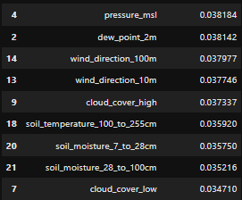
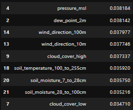

Fire in Focus: A Deep Learning Approach to Analyzing Wildfires
The Nature of the topic
Wildfires are natural disasters that occur in regions experiencing extreme heat and dry conditions, significantly impacting both human society and the environment. This project focuses on collecting and analyzing wildfire data from the United States to predict future occurrences. Our insights have led us to understand that wildfires pose a serious threat, making it crucial for people to be prepared for potential dangers. This understanding serves as the backbone of our project. We aim to develop a predictive analysis to ensure that we are prepared to face any potential risks. Our goal is to leverage wildfire data to develop a predictive model that forecasts when and where wildfires are likely to occur and spread in the United States. This will ensure that hospitalization facilities are available when needed. In the long term, it could save lives by reducing the impact of future wildfire events.

The figure above is from the worst wildfire in the United States, which broke out in California in 2020.
Why Wildfire Analysis is Important?
The main goal of this project is to benefit the people of the USA from wildfire threats. Wildfires are a serious concern due to their potential to cause innocent deaths, highlighting the urgent need to develop a model for predicting future events. Ultimately, our project could reduce the number of lives lost during wildfire incidents. Wildfires are increasingly common due to climate change. The diverse terrain and highly urbanized land in the USA make it particularly vulnerable. Wildfires are spreading across grasslands and vegetated areas, putting a significant amount of agricultural land at risk. This can lead to desertification, soil erosion, changes in water runoff, altered precipitation patterns, and reduced soil quality in affected regions. When nations destroy their flora, they miss out on economic opportunities. Furthermore, wildfires alter landscapes and destroy natural attractions. This project has the potential to serve as a model for all countries facing similar challenges. Finally, this project is also focused on safeguarding the environment. We aim to prevent wildfires from destroying vast areas of land. Wildfires not only devastate vegetation but also harm wildlife, thereby threatening biodiversity. The fire-prone areas in the USA serve as habitats for various species, and losing these habitats could significantly impact our ecosystem.

The above picture depicts the agriculture land lost during a wildfire in California 2020.

The table above illustrates the frequency of wildfire events and the acres burned each year in the United States.

The graph above depicts the federal annual wildfire suppression costs for 1983-2021.
Who is Affected?
Wildfires are catastrophic events that impact people and communities, leaving a long lasting impact on landscape and society. Residents in fire-prone areas are affected the most and often live near wildlands, where the risk of wildfire is significantly high. When a wildfire occurs, these people face immediate danger to their lives, and property. Beyond the physical threat they endure the psychological toll of loss of property, evacuation and uncertainty. The destruction of homes and loss of personal belongings lead to a great sense of loss and trauma. Many families require physical rebuilding and emotional healing as they deal with the trauma of the experience. In such emergencies, firefighters and emergency personnel play a critical role but face high risks from wildfires. These individuals put their lives at risk to protect people and nature from the destructive fire. The physical and mental strain of battling wildfires can be immense, leading to burnout, exhaustion, and in some cases, post-traumatic stress disorder (PTSD). Firefighters often work long hours in hazardous conditions, facing extreme heat and unpredictable fire behavior. Their efforts are crucial and often lack sufficient resources and support, which can hinder their ability to respond effectively to fires. The psychological impact of witnessing destruction and loss can also affect their well-being so it is important to create support systems for those at the frontline.

Civilians and first responders utilize a temporary refuge area established in a parking lot to stay safe during a Fire.
During and after a wildfire, local and state governments bear responsibility for resource allocation and ensuring public safety. These authorities must take critical decisions about evacuations, resource deployment, and maintain clear communication with the public. Firefighting efforts pose a financial burden and can strain budgets, leading to tough choices about where to allocate funds in the wake of a disaster. Recovery efforts require long-term planning and investment in rebuilding infrastructure, which can take years to achieve. Government agencies need to collaborate with various stakeholders, including organizations and environmental groups, to effectively manage recovery and restoration efforts

A firefighter battling the Creek Fire in the Cascadel Woods neighborhood of Madera County, California
Wildfires do not just affect people and nature but also entire ecosystems and wildlife. Many species are displaced or killed in fire events, leading to declines in biodiversity and disruptions in food chains. Studies about the Australia bushfire in January 2020 show that nearly 3 billion animals were killed or displaced. Forests and grasslands that are crucial for carbon capture and the air quality may take years or decades to recover. The loss of vegetation can also lead to soil erosion and increased runoff, which can affect water quality in nearby streams and rivers. The long-term ecological consequences of wildfires require a holistic approach to land management, considering human needs and also the health of the ecosystems that sustain us.

Housing subdivision Coffey Park, Santa Rosa leveled by flames
Industries such as real estate, agriculture, and tourism are significantly affected by wildfires. Farmers may lose crops and livestock, leading to financial hardships and food supply disruptions. The tourism industry can suffer as natural attractions become inaccessible or damaged. This impacts local economies that rely on visitors. In areas where property values depend on how close they are to natural landscapes, wildfires can lead to a decline in real estate markets, as potential buyers become scared to invest in areas with fire risks. Wildfires create a ripple effect that extends far and wide, underscoring the necessity for effective risk mitigation and management strategies that address the diverse needs of all affected stakeholders.

Proportion of Total Economic Impact Borne By Different Societal Segments from a San Diego County Study
What has been done so far and what are the gaps?
Wildfires have become increasingly prevalent and are causing environmental issues, further exacerbated by climate change and human activities. These events pose immediate threats to life and property while also having long-term ecological impacts. Historically, wildfires have been a natural part of many ecosystems by contributing to nutrient cycling and habitat formation. However, the frequency and intensity of wildfires have risen exponentially in recent years, bringing a need for improved prediction and management strategies. Recent advancements in technology and data analysis have provided new tools to address these challenges, yet significant gaps remain in our understanding and response capabilities. In recent years, there has been substantial progress in wildfire prediction techniques. The integration of satellite imagery, remote sensing, and machine learning algorithms has transformed the data collection and analysis. For example, NASA and other agencies have developed satellite systems that monitor vegetation moisture levels, temperature, and wind patterns, which are key indicators of a risk of wildfire. These tools have helped researchers and fire management agencies to identify high-risk areas and assess the potential for fire ignition and spread more accurately than in the past. Predictive modeling, such as the use of Weather Research and Forecasting (WRF) models, has enhanced the ability to forecast fire behavior under varying weather conditions.

Nighttime view of two wildfires in Southern California, based on observations taken by NASA’s ECOsystem Spaceborne Thermal Radiometer Experiment on Space Station (ECOSTRESS). The areas in red show where the fire was active when the observations were taken and the area in orange show above-average nighttime ground temperatures, which are likely caused by a heat wave
Data mining and analytics play a vital role in wildfire management by analyzing historical fire data alongside meteorological conditions. Researchers have developed models that can predict fire outbreaks with a decent degree of accuracy. Techniques such as clustering and classification have been utilized to identify patterns and correlations within large datasets, leading to more effective resource allocation and risk management strategies. Data-driven models have been instrumental in guiding controlled burns and firebreak constructions, which are essential for preventing wildfires from spreading uncontrollably. Additionally, community-based monitoring systems have helped local populations to report fire hazards, further enhancing early warning capabilities.

Firing the woods in a South Carolina forest with a custom made driptorch mounted on an ATV. The device spits flaming fuel oil from the side which instantly ignites the leaf litter.
Despite these advancements, significant challenges remain in wildfire prediction and management. One of the primary challenges is the lack of real-time data integration from multiple sources, such as social media, local reports, and environmental sensors. Current models mostly rely on historical data which may not accurately reflect the changing climatic conditions or land use patterns. Many existing prediction models do not account for the complexities of human behavior during fire events, such as evacuation patterns and decision-making processes. This can hinder effective communication and coordination among emergency responders and the affected communities. Machine learning has promising solutions to address some of these challenges in wildfire prediction and management. Advanced algorithms can analyze vast amounts of unstructured data from various sources, enabling real-time risk assessments and adaptive management strategies. Deep learning models can process satellite images and remote sensing data to detect changes in land cover and vegetation health, providing critical insights for fire risk assessment. However, the application of machine learning in this field needs to be advanced, and there is a need for collaboration between data scientists, ecologists, and fire management professionals to develop models that can be deployed in real-world scenarios.

Average Temperature across Forest Service Land in US in the last 40 years
Fire spread modeling has also seen significant advancements, yet traditional fire spread models like FARSITE have limitations in terms of computational efficiency. Recently there has been a focus on developing new models that can better capture the physical processes involved in fire spread while remaining computationally efficient. For example, the U.S. Forest Service has been collaborating with Google Research on a new fire behavior model that incorporates detailed fuel characteristics and can be run in real time using machine learning techniques to reduce computation times. Additionally, cellular automata models have shown promise in simulating fire behavior, when combined with machine learning techniques to improve efficiency and accuracy. As climate change continues to impact fire dynamics, ongoing research and collaboration will be essential for developing effective strategies to mitigate the risks posed by wildfires. By focusing on these areas, we can lay the foundation for more resilient ecosystems and safer communities in the face of increasing wildfire threats.
Research Questions
- How confident are the satellite information that give us wildfire data
- What are the different instruments and satellites used for wildfire imagery
- What are the different hotspots? Is it vegetation? Volcano? Other static land source? Offshore detection?
- Wildfire pattern across USA from 2000-2024
- Were wildfire rates consistent across each year?
- Which State in USA has had the most number of wildfires since 2000?
- Wildfire pattern across the state with most wildfires from 2000-2024
- Is the above trend similar to that of USA as a whole?
- Which months of the year on an average have had the most wildfires for that state
- Is there a correlation with the temperature during those months and the wildfire frequency?
Data Exploration
Objective
The objective of this project is to develop a wildfire prediction and analysis system for California by leveraging wildfire data from satellite observations and weather data. By integrating wildfire hotspots with meteorological conditions such as temperature, humidity, wind speed, and precipitation, the project aims to forecast wildfire occurrences and provide actionable insights. This analysis will improve understanding of wildfire patterns and support more effective wildfire management strategies.
Data Collection
- NASA Firms API for wildfires - https://firms.modaps.eosdis.nasa.gov/api/
- Weather API - https://open-meteo.com/
Weather Data Attributes
Most weather variables are given as an instantaneous value for the indicated hour. Some variables, like precipitation, are calculated from the preceding hour as an average or sum.
| Variable | Valid Time | Unit | Description |
|---|---|---|---|
| temperature_2m | Instant | °C (°F) | Air temperature at 2 meters above ground |
| Air temperature at 2 meters above ground | Instant | % | Relative humidity at 2 meters above ground |
| dew_point_2m | Instant | °C (°F) | Dew point temperature at 2 meters above ground |
| apparent_temperature | Instant | °C (°F) | Perceived temperature combining wind chill factor, relative humidity and solar radiation |
| precipitation | Preceding hour sum | mm (inch) | Total precipitation (rain, showers, snow) sum of the preceding hour |
| Rain | Preceding hour sum | mm (inch) | Only liquid precipitation of the preceding hour including local showers and rain from large scale systems. |
| Snowfall | Preceding hour sum | cm (inch) | Snowfall amount of the preceding hour in centimeters. For the water equivalent in millimeter, divide by 7. E.g. 7 cm snow = 10 mm precipitation water equivalent |
| snow_depth | Instant | meters | Snow depth on the ground. Snow depth in ERA5-Land tends to be overestimated. |
| weather_code | Instant | WMO code | Weather condition as a numeric code. |
| pressure_msl surface_pressure | Instant | hPa | Atmospheric air pressure reduced to mean sea level (msl) or pressure at surface. |
| cloud_cover | Instant | % | Total cloud cover as an area fraction |
| cloud_cover_low | Instant | % | Low level clouds and fog up to 2 km altitude |
| cloud_cover_mid | Instant | % | Mid level clouds from 2 to 6 km altitude |
| cloud_cover_high | Instant | % | High level clouds from 6 km altitude | shortwave_radiation | Preceding hour mean | W/m² | Shortwave solar radiation as average of the preceding hour. | direct_radiation & direct_normal_irradiance | Preceding hour mean | W/m² | Direct solar radiation as average of the preceding hour on the horizontal plane and the normal plane | diffuse_radiation | Preceding hour mean | W/m² | Diffuse solar radiation as average of the preceding hour |
| cloud_cover_mid | Preceding hour mean | W/m² | Mid level clouds from 2 to 6 km altitude |
| global_tilted_irradiance | Preceding hour sum | W/m² | Total radiation received on a tilted pane as average of the preceding hour. |
| sunshine_duration | Preceding hour sum | Seconds | Number of seconds of sunshine of the preceding hour per hour calculated by direct normalized irradiance exceeding 120 W/m², following the WMO definition. |
| et0_fao_evapotranspiration | Preceding hour sum | mm(inch) | ET₀ Reference Evapotranspiration of a well watered grass field. Based on FAO-56 Penman-Monteith equations ET₀ is calculated from temperature, wind speed, humidity and solar radiation. |
| vapour_pressure_deficit | Instant | kPa | Vapor Pressure Deificit (VPD) in kilopascal (kPa). |
| wind_speed_10m & wind_speed_100m | Instant | km/h (mph, m/s, knots) | Wind speed at 10 meters above ground. |
| wind_direction_10m | Instant | ° | Wind speed at 10 or 100 meters above ground. Wind speed on 10 meters is the standard level. |
| wind_direction_100m | Instant | ° | Wind direction at 100 meters above ground |
| wind_gusts_10m | Instant | km/h (mph, m/s, knots) | Gusts at 10 meters above ground as a maximum of the preceding hour |
| soil_temperature_0_to_7cm, soil_temperature_7_to_28cm, soil_temperature_28_to_100cm, soil_temperature_100_to_255cm | Instant | °C (°F) | Average temperature of different soil levels below ground. |
| soil_moisture_0_to_7cm, soil_moisture_7_to_28cm, soil_moisture_28_to_100cm, soil_moisture_100_to_255cm | Instant | m³/m³ | Average soil water content as volumetric mixing ratio at 0-7, 7-28, 28-100 and 100-255 cm depths. |
VIIRS NRT Attribute Fields
| Attributes | Description |
|---|---|
| Latitude | Center of nominal 375 m fire pixel |
| Longitude | Center of nominal 375 m fire pixel |
| Bright_ti4 | VIIRS I-4 channel brightness temperature of the fire pixel measured in Kelvin. |
| Scan | The algorithm produces approximately 375 m pixels at nadir. Scan and track reflect actual pixel size. |
| Track | The algorithm produces approximately 375 m pixels at nadir. Scan and track reflect actual pixel size. |
| Acq_Date | Date of VIIRS acquisition. |
| Acq_Time | Time of acquisition/overpass of the satellite (in UTC). |
| Satellite | N= Suomi National Polar-orbiting Partnership (Suomi NPP) |
| Confidence | This value helps gauge the quality of individual hotspot/fire pixels. Confidence values are set to low, nominal, and high. Low confidence pixels are typically associated with sun glint or lower relative temperature anomaly. |
| Version | Version identifies the collection and source of data processing: Near Real-Time (NRT suffix added) or Standard Processing. |
| Bright_ti5 | I-5 Channel brightness temperature of the fire pixel measured in Kelvin. |
| FRP | FRP depicts the pixel-integrated fire radiative power in megawatts (MW). The VIIRS 375 m fire detection algorithm optimizes response over small fires while balancing false alarms. |
| Type* | 0 = presumed vegetation fire, 1 = active volcano, 2 = other static land source, 3 = offshore detection. |
| DayNight | D = Daytime fire, N = Nighttime fire. |
Step 1 - Collecting Wildfire Data
We used the NASA FIRMS API, which provides data on fires and hotspots detected from satellite observations.


The above screenshots show the raw data collected from multiple satellites

The merged wildfire raw dataset consists of all wildfires that occurred in the USA from 2000-2024.
The column CONFIDENCE has mixed data types. The confidence levels are low(l), nominal(n), and high(h). Only about 15% of the data within the confidence attribute is numeric, so we binned the values into different ranges. Instances with confidence = l were dropped from the training set, as they were likely misclassified due to sun glare or cloud reflection. Daytime fire pixels with low confidence are linked to sun glint and lower relative temperature anomalies (<15K) in mid-infrared channel I4. Nominal confidence pixels are those without sun glint and with a temperature anomaly of >15K in day or nighttime data. Fire pixels with high confidence are associated with day or nighttime saturation.

Histogram showing the distribution of confidence levels of satellite wildfire detection.

Histogram showing the distribution of wildfires based on day and night
Geospatial Analysis
The following carousel of density plots depicts the wildfire distribution throught the years of 2000,2005,2010,2015,2020,2024, respectively in the United States.


The above attached Temporal plot implies that more than 75% of all occurrences of wildfires in the United States since 2000 have happened after 2013!

The above histogram shows the wildfire count of the United States from 2000 to present.

Density Plot of wildfires in California in the year 2024, with a high concentration in Southern California.
California has got the most wildfires which accounts to almost one-eigth of the total wildfires of the United States.

Frequency Plot of wildfires in California.
Frequency Plot to identify what time of the year contributes to the most wildfires in California. It turns out that July to September has the most number of wildfires. These also happen to be the hottest months of the year in California
Step 2 - Collecting Weather Data
We used the Open-Meteo weather API to gather weather data. Open-Meteo is an open-source weather API which gives hourly weather data. We used the Python API client. The API has a daily limit of 10000 so we restricted our satellite data to only Southern California from 2020 and fetched the weather data for respective latitude and longitudes.
The weather dataset contains the following attributes:

Feature Analysis and EDA
Snow Depth
Snow depth is the only Column with null values. 99% of all snow_depth occurrences are 0 indicating that snow does not happen when there is wildfire. Therefore all the nulls will be replaced by the Mode=0.


Temperature

Months 6-9 (June to September) have a higher average temperature compared to the rest of the year which is very similar to the wildfire-month trend seen earlier above. Temperature is therefore a critical variable when it comes to wildfires.

Correlation heatmap of weather and fire variables.

There is an apparent negative correlation between temperature and humidity, but the other features like wind speed and precipitation do not have a lot of correlation between them.

There is a very marginal difference in relative humidity in the presence or absence of a wildfire.
Training Dataset
The training dataset for our wildfire prediction model combines weather data from a weather API and satellite data from NASA's API. The dataset has features such as temperature, humidity, wind speed, and cloud cover. The target variable is "fire", where a value of 1 indicates the occurrence of a wildfire, and 0 indicates no wildfire.
The following image gives us a detailed description of all the attributes used:


Models Implemented
With our training data prepared, the next step is to leverage this data to build a predictive model. The objective of this predictive analysis is to determine whether a wildfire is likely to occur in the near future based on weather forecasts for a given region in California. This task falls under supervised machine learning and is specifically a binary classification problem.
To prepare the data for modeling, we separated the features from the target variable and performed an 80:20 train-test split. We then standardized the numerical features using StandardScaler, transforming them to follow a standard normal distribution (mean = 0, variance = 1). This transformation ensures that the models can interpret the data more effectively, improving their predictive performance.
For the purpose of this project, we developed 8 machine learning models:
- Logistic Regression
- Decision Tree
- Support Vector Machine
- Random Forest
- LightGBM
- XGBoost
- K-Nearest Neighbors
- Naive Bayes Classifier
Every model developed has undergone feature selection, feature engineering, K-Fold Cross Validation, hyperparameter tuning, model building, and evaluation metrics. We will now discuss in detail all the steps carried out for each of the 8 models.
Logistic Regression
The basic assumption of a Logistic Regression Classifier is that every feature or attribute used to model should be independent. In other words, there should not be any multicollinearity between the variables. Therefore, as part of building this model, we removed all variables that were highly correlated with each other (as seen in the image below).

As part of the feature engineering process, we discretized every attribute by using the Standard Scaler. This process converts each feature attribute to a standard normal distribution with a mean of 0 and variance of 1.
The next step was to validate the model. This is a crucial step before building any machine learning model as it helps prevent overfitting. By applying K-Fold Cross Validation on 5 different sets, we obtained a mean accuracy score of 0.583, which is poor as it is barely better than randomly guessing any class.
To address this, we further tuned the hyperparameters of the logistic regression model using a Python library called HyperOpt. This library automates the process of finding the best combination of hyperparameters, which can improve the model's performance. HyperOpt randomly samples hyperparameters from a defined search space (shown in the image below) and uses a probabilistic model-based optimization technique that balances exploration and exploitation.

After fitting the model onto an objective function to improve accuracy, we obtained the best hyperparameters of the model to be:
- C = 0.01667000925475309
- max_iter = 200
- solver = 'liblinear'
- penalty = 'l2'
'C' here is the inverse of regularization (1/lambda). A small C value indicates stronger regularization, which adds a large penalty to strong coefficients to reduce overfitting or increase underfitting. Max_iter = 200 indicates the algorithm’s threshold for the number of iterations before the optimization algorithm converges. 'Liblinear' is a solver based on the coordinate descent algorithm. The 'penalty' indicates the type of regularization applied to the model. L1 is Lasso, L2 is Ridge, and Elastic Net is a mix of both.
We then split the entire dataset into train and test sets (80% for training and 20% for testing) and built the Logistic Regression model using the best hyperparameters obtained. Despite this, we achieved only an accuracy score of 0.59, with the confusion matrix shown below. The AUC-ROC score, which helps describe the model's ability to distinguish between classes, was also only 0.62.
These results indicate a major limitation of the Logistic Regression model: it relies on the data being linearly separable, which was not the case with this wildfire prediction data.

Confusion Matrix showing the performance of the Logistic Regression model.

ROC-AUC curve and score indicating the model's ability to distinguish between classes.
Decision Tree
A Decision Tree is a supervised machine learning algorithm used for classification and regression tasks. It makes decisions based on a tree-like structure where each node represents a decision made on an attribute and the edges represent the possible outcomes. There are three main components of the tree:
- Root Node: The topmost node that contains the entire dataset, and from which the first decision is made.
- Decision Nodes: These nodes split the data based on feature values (e.g., "Is age > 30?").
- Leaf Nodes: The final decision or prediction is made at the leaf node.
At each decision node, the algorithm chooses the best feature based on a criterion like Gini impurity or information gain. This process is repeated recursively for each subset of data until a stopping condition is met. During predictions, the data flows through the tree based on the feature values, and the final output is made by the leaf node it ends up in.
The baseline Decision Tree model performed decently, but we improved its performance by tuning its hyperparameters.


Hyperparameter Tuning with Optuna
We used Optuna to perform hyperparameter tuning to find the best Decision Tree model. Optuna is a hyperparameter optimization framework designed for automatic and efficient tuning of machine learning models. It uses algorithms to intelligently explore the hyperparameter space, identifying the optimal combination of parameters that maximizes a specific metric. Optuna supports techniques like Bayesian optimization and Tree-structured Parzen Estimators (TPE). This reduces computational costs compared to grid or random search, especially for complex models like Decision Trees.
For this tuning, we defined an objective function in which Optuna evaluates different combinations of hyperparameters for a Decision Tree model. The function computes the model’s performance on a cross-validation (CV) set and returns the mean accuracy score.
Hyperparameters Tuned
- max_depth: Controls the maximum depth of the decision tree. A larger value will allow the tree to grow deeper to capture more complex patterns. However, deeper trees may lead to overfitting. Limiting the depth helps prevent overfitting.
- min_samples_split: Specifies the minimum number of samples required to split an internal node. Higher values prevent the model from learning overly specific patterns and reduce overfitting by making splits more conservative.
- min_samples_leaf: Defines the minimum number of samples required to be at a leaf node. Higher values ensure that leaves contain more data points, which helps the model avoid overfitting by reducing the chance of learning from outliers or noise.
- max_features: Specifies the number of features to consider when looking for the best split. It helps control the complexity of the tree. Lower values can prevent overfitting by making the tree less sensitive to the data, while higher values allow more features for each split, increasing complexity.
- ccp_alpha: This parameter is used for cost-complexity pruning. It controls the pruning of the tree after it is fully grown. Larger values of ccp_alpha lead to more aggressive pruning, which can help simplify the tree and reduce overfitting. A smaller value allows the tree to grow deeper and potentially overfit the training data.
- criterion: The criterion parameter specifies the function used to measure the quality of a split. 'gini' is the Gini impurity, while 'entropy' uses the information gain from the data. Both criteria aim to reduce impurity in the nodes. This choice can influence the model's performance but both perform equally well in most cases.
We conducted an Optuna study with 200 trials to find the optimal hyperparameter combinations that maximize cross-validation accuracy.


Model Performance After Hyperparameter Tuning
Below are the results of the new model. It is evident that the training accuracy has decreased compared to the baseline model, indicating that the new model is less overfitted.


After hyperparameter tuning, the new model showed the following improvements compared to the baseline model:
- Accuracy: Increased, reflecting better overall performance.
- Precision: Improved, showing the model is more accurate in predicting positives.
- F1 Score: Improved, indicating a better balance between precision and recall.
However, recall decreased slightly, suggesting a trade-off in performance. Specifically:
- True Positives: Increased, indicating the model is better at identifying actual positive instances.
- False Negatives: Decreased, showing the model is less likely to miss positive instances.
- True Negatives: Decreased, indicating that the model is more aggressive in predicting positives, which may increase false positives.
The overall performance indicates that while the tuned model is better at detecting positives, it has become slightly more prone to false positives. This reflects a shift in the model’s balance toward identifying positive instances more frequently.
Feature Importances and ROC-AUC Evaluation
To further understand the tuned model's performance, we analyzed the feature importances and evaluated the model's effectiveness using the ROC-AUC curve.


Support Vector Machine (SVM)
SVM is a supervised learning algorithm used for classification tasks. It finds the optimal hyperplane that best separates the data points of different classes in a high-dimensional feature space. The objective of SVM is to maximize the margin, which is the distance between the hyperplane and the nearest data points (support vectors) from each class. This margin maximization ensures better generalization to unseen data.
SVM can effectively handle linear and non-linear classification by using kernel functions, which map the data into higher-dimensional spaces where a linear hyperplane can separate the classes. The ability to transform data using kernels makes SVM powerful for solving complex classification problems.
Baseline Model Performance
The baseline SVM model was evaluated using standard metrics. However, the results show that the model struggled, with a significant number of false positives, where it incorrectly classified non-target instances as target instances. This highlights the challenges of the baseline SVM model in capturing the underlying patterns effectively.
Computational Complexity: SVMs are computationally expensive for large datasets and complex kernel functions. Training involves solving a quadratic optimization problem, which scales poorly with the number of data samples. This makes SVM less suitable for massive datasets unless simpler approximations like Linear SVM are used. The high computational cost is a trade-off for SVM’s ability to handle non-linear, separable data.
Hyperparameter Tuning with RandomizedSearchCV
We performed randomized search using RandomizedSearchCV, which is a hyperparameter tuning method that randomly samples from the hyperparameter space. Unlike GridSearchCV, which searches through all possible combinations of hyperparameters, RandomizedSearchCV randomly samples a fixed number of combinations from the hyperparameter space and evaluates them.
Key Parameters in RandomizedSearchCV:
- param_dist: A dictionary of hyperparameters from which random values are sampled.
- n_iter: The number of hyperparameter combinations to evaluate.
- cv: Number of cross-validation folds (cv=3 for 3-fold cross-validation).
- n_jobs: Number of CPU cores used for parallel computation (n_jobs=-1 utilizes all available cores for efficiency).
Tuned Hyperparameters
- C (Penalty parameter): Controls the trade-off between a smooth decision boundary and correct classification of training examples.
- gamma (Kernel coefficient): Defines the influence of individual training examples on the decision boundary.
- kernel (Kernel function): Specifies the type of decision boundary to use for data separation (e.g., 'linear', 'rbf', 'poly').
- degree (Degree of the polynomial kernel): Determines the degree of the polynomial used for the decision boundary (only applicable for 'poly' kernel).
- tol (Tolerance for stopping criterion): Controls the tolerance for optimization and stopping criteria.
- shrinking (Shrinking heuristic): Boolean parameter that determines whether the shrinking heuristic is applied.
Results After Tuning
These are the best hyperparameters obtained after tuning.
Below are the results of the tuned model on the training and testing data. We can see an improvement in the training accuracy
After hyperparameter optimization using RandomizedSearchCV, the SVM model demonstrated significant improvement across all evaluation metrics:
- Recall: Improved notably, indicating the model’s improved ability to correctly identify positive instances.
- False Positives: Reduced, though they remain a concern, suggesting that the model still struggles with balancing precision and recall.
The tuned model’s performance validates the effectiveness of hyperparameter tuning in addressing SVM's sensitivity to data and parameter configurations. While the false positive rate remains an area for improvement, the overall enhancements in metrics demonstrate the value of careful optimization.
Random Forest
Random Forest is an ensemble method that builds upon multiple decision trees during training and then combines their results for better predictions, making it robust. The biggest advantage of Random Forests over Decision Trees is that they generally have the same bias but lower variance than a single predictor. Another feature of Random Forest is its ability to create a feature importance table, which looks at how much the tree nodes that use that feature reduce impurity on average.
When building a Random Forest Model for the purpose of wildfire prediction, we emphasized reducing the dimensionality of the dataset. This was done using Random Forest's feature importance. It was of no surprise to see that features like snow, rain, and precipitation contributed least to the prediction of wildfires and therefore were ranked very low. Features like evapotranspiration (a feature that incorporates temperature, wind speed, humidity, and solar radiation), soil temperature, etc., were ranked high.


Model Evaluation and Cross-Validation
Similar to the models above, we performed a 5-fold cross-validation to prevent the chance of overfitting. The mean accuracy score obtained was 0.835, which indicates that this model promises to generalize really well on average. For this model, we explored Optuna, an open-source hyperparameter tuning Python library. It employs techniques like Bayesian Optimization, Tree Structured Parzen Estimators (TPE), and random search. Not only this, Optuna also allows users to define an objective function, which optimizes through iterative trials.
Hyperparameter Tuning with Optuna
The images below show the search space initialized for Optuna’s objective function and the best set of hyperparameters obtained after 50 trials.
Key Hyperparameters Tuned:


- n_estimators: The number of decision trees in the forest. The fewer the trees, the less variance, but computational time can increase.
- max_depth: The maximum depth of each decision tree. Larger values can fit complex hidden patterns but may lead to overfitting.
- min_samples_split: The minimum number of samples needed to split an internal node. High values indicate that nodes have sufficient data before splitting, which can help prevent overfitting.
- min_samples_leaf: The minimum number of samples required to be present in a leaf node. This helps prevent overfitting by ensuring that leaves have sufficient data.
- max_features: 'sqrt' is an algorithm that considers the square root of the total number of features at each split.
- criterion: The function used to measure the quality of a split, either Gini impurity or entropy.
Results After Hyperparameter Optimization
After obtaining the best hyperparameters for the wildfire prediction model, we split the dataset into 80% train and 20% test. We then trained a Random Forest Classification Model. The classification metrics and AUC-ROC score obtained are shown below.


Model Performance
This model performed really well at accurately predicting wildfires. Not only did it achieve a good accuracy score, but it also received an excellent ROC score, indicating that the model can effectively distinguish between wildfire occurrences and non-occurrences.
Light GBM
Light GBM (Gradient Boosting Machine) is a newer variation of Gradient Boosting Algorithms developed by Microsoft. It was designed for high-performing machine learning problems, particularly in situations where training speed, memory efficiency, and scalability are critical. Like other models, we developed a K-Fold Cross Validation methodology to evaluate how well the model generalized on average and to check if the model had high variance on the test set. We obtained an accuracy score of 0.79 across the 5 folds, indicating that the model performed fairly well across multiple subsets of the dataset.
Hyperparameter Tuning with RandomizedSearchCV
We then performed hyperparameter tuning using RandomizedSearchCV. This algorithm randomly selects a combination of hyperparameters and evaluates their performance, offering a much more efficient way than performing GridSearchCV. This optimization algorithm helped us find the best set of hyperparameters.

Key Hyperparameters Tuned:
- colsample_bytree: This parameter gives us the fraction of features to sample to build each tree. In this case, 84% of features are randomly selected for each tree.
- learning_rate: This parameter controls how fast or slow the model converges to the optimal solution. A low value increases computation time, while a high learning rate can overshoot the optimal solution.
- max_depth: The maximum depth of each tree, which helps in controlling the complexity of the model.
- min_child_samples: The minimum number of samples required in a child node. A higher value prevents the model from creating overly specific trees and helps with regularization.
- n_estimators: The number of trees in the ensemble model.
- num_leaves: The number of leaves in each tree. This affects the complexity of the trees and the ability of the model to capture intricate patterns.
- reg_alpha: The L1 (Lasso) regularization term on leaf weights, which adds a penalty for large weights to reduce the risk of overfitting.
- reg_lambda: The L2 (Ridge) regularization term on leaf weights, which is similar to reg_alpha but squared.
- subsample: This parameter indicates that about 62% of the data samples were used to train each tree. This helps prevent overfitting and increases the robustness of the ensemble method.
Model Performance
Similar to the models described above, the Light GBM model was trained using the best hyperparameters obtained. The images below show that ensemble methods, in general, are better at capturing the essence of predicting wildfires compared to distance-based or linear models.


Extreme Gradient Boosting (XGBoost)
XGBoost is a machine learning algorithm based on gradient boosting, designed for both regression and classification tasks. It builds decision trees sequentially, where each new tree tries to correct the errors made by the previous ones. The final prediction is a combination of all the trees, which helps provide high accuracy and robustness.
Key Features
- Regularization: XGBoost supports both L1 and L2 regularization to control the complexity of the model and reduce overfitting.
- Pruning: XGBoost uses tree pruning to stop tree splitting when further splits do not improve performance. This improves computational efficiency and prevents unnecessary complexity.
Baseline Model
For our baseline model, we performed 5-fold cross-validation, achieving a mean accuracy of 82.3%. On the training data, the baseline model achieved an accuracy of 86.79%. However, false positives were high on the test data, where the model incorrectly predicted wildfire occurrences in non-fire scenarios.
Hyperparameter Tuning with Bayesian Optimization
To optimize the XGBoost model, we used Bayesian Optimization, a hyperparameter tuning technique that efficiently explores the hyperparameter space by modeling the relationship between hyperparameters and the model's performance using a probabilistic surrogate function.
Unlike grid or random search, Bayesian Optimization:
- Learns from previous evaluations and identifies the most promising regions of the search space for further exploration.
- Balances exploration and exploitation, iteratively selecting new hyperparameters to maximize performance while minimizing unnecessary evaluations.
We utilized BayesSearchCV from the scikit-optimize library, which combines Bayesian Optimization with cross-validation for hyperparameter tuning. The process started with random samples, and subsequent iterations used prior results to intelligently select new hyperparameters.
Hyperparameters Tuned
These are the hyperparameters that were tuned
- learning_rate: Determines the size of the steps during each boosting round. Lower values lead to slower learning but often result in a more accurate model, while higher values risk overshooting the optimal solution.
- n_estimators: Specifies the number of boosting rounds (trees) in the model. More estimators allow the model to learn more but increase training time and risk overfitting.
- max_depth: The maximum depth of each decision tree. Deeper trees allow the model to learn more complex patterns but may lead to overfitting.
- subsample: Determines the fraction of training samples used to grow each tree. Lower values add randomness, reducing overfitting but possibly underfitting the data.
- colsample_bytree: Specifies the fraction of features used when constructing each tree. Lower values reduce feature dependency, preventing overfitting.
- gamma: Sets the minimum reduction in loss required to make a further split on a node. Higher values make the model more conservative, requiring larger reductions in loss before splitting.

Model Performance
After tuning, the model achieved a training accuracy of 97.81%. On the test dataset, the results showed significant improvement over the baseline model:
 

- Accuracy: Improved, reflecting better overall performance.
- True Positives: Improved, indicating better detection of actual wildfire occurrences.
- False Positives: Reduced, demonstrating a better balance in predictions compared to the baseline.
Despite the improvements, the model is still slightly biased toward predicting wildfire occurrences, leading to occasional false positives. This trade-off highlights the challenge of balancing the detection of true positives while minimizing false positives.
We used the AUC-ROC score and the ROC curve to assess the model's performance. These metrics provide insights into the trade-offs between sensitivity (recall) and specificity across different classification thresholds, enabling a comprehensive evaluation of the model's predictive capability.
 

K-Nearest Neighbors (KNN)
K-Nearest Neighbors (KNN) is a simple machine learning algorithm that predicts the class of a data point based on its closest neighbors. The performance of KNN heavily depends on selecting the right number of neighbors (k) and the distance metric used to measure similarity.
Baseline Model Performance
The training accuracy of the baseline KNN model was 84.2%, while the test accuracy was 77.21%. The confusion matrix and classification metrics revealed areas for improvement, particularly in balancing recall and precision.
Hyperparameter Tuning with Bayesian Optimization
The KNN algorithm's key parameters include:
- n_neighbors: Determines how many neighbors to consider. Larger values create smoother decision boundaries, while smaller values capture finer patterns but may lead to overfitting.
- weights: Decides whether all neighbors contribute equally (uniform) or if closer neighbors have more influence (distance).
- metric: Specifies the distance metric (e.g., Euclidean, Manhattan, Minkowski) used to calculate distances between points.
To optimize the KNN model, we used Bayesian Optimization with BayesSearchCV, fine-tuning parameters such as n_neighbors (1 to 20), weights (uniform or distance), and metric (Euclidean, Manhattan, or Minkowski). The optimization process ran for 50 iterations with 5-fold cross-validation to ensure robustness.
Optimized Model Performance
After hyperparameter tuning, the best configuration was:
- n_neighbors: 5
- weights: distance
- metric: Manhattan
This optimized configuration boosted the model's performance, achieving the following results:
- Test Accuracy: 79.40%
- Precision: 75.91%
- Recall: 86.82%
- F1-Score: 81.00%
The optimized KNN model effectively balances simplicity, complexity, and accuracy, making it a reliable choice for wildfire prediction.
Confusion Matrix and Misclassifications
After tuning, the model correctly identified:
- True Negatives: 8,084
- True Positives: 10,003
However, it misclassified:
- False Positives: 3,174
- False Negatives: 1,519
Cross-Validation and AUC Score
The classification report reflects the precision, recall, and F1-score for the fine-tuned KNN model. It achieved an overall accuracy of 79%, with precision and recall values of 76% and 87% for class 1 (wildfire). The cross-validation scores across 5 folds ranged between 78.26% and 78.35%, confirming the model's consistency and reliability across different subsets of data.
With an AUC score of 0.87, the ROC curve reflects excellent discrimination, indicating that the fine-tuned KNN model effectively predicts wildfire occurrences with high confidence.
Naive Bayes
Naive Bayes is a classification algorithm that uses Bayes' Theorem to predict outcomes. It assumes that all features are independent given the class label, making it computationally efficient and well-suited for high-dimensional datasets.
Baseline Model Performance
Our Naive Bayes model leverages Bayes' theorem to predict the likelihood of wildfire occurrences. During the initial training phase, the model exhibited a training accuracy of 52.92%. The baseline confusion matrix highlighted some challenges, with:
- True Negatives: 1,897
- True Positives: 10,261
- False Positives: 9,361
- False Negatives: 1,260
The classification report further revealed a significant imbalance in the model’s predictions, with the precision and F1-scores for non-wildfire cases being notably lower.
Hyperparameter Tuning with Bayesian Optimization
We focused on optimizing the var_smoothing parameter, which adds a small value to the variance of each feature to ensure stable probability calculations and avoid division by zero errors. Using Bayesian optimization, we explored different values for this parameter and selected the best-performing configuration.
We evaluated the model through 5-fold cross-validation to prevent overfitting and measure its generalizability. The model achieved a mean cross-validation accuracy of 57.71%, showing consistent performance across data splits. However, its overall performance was limited due to the complexity of the dataset, as indicated by an AUC-ROC score of 0.61.
Model Performance After Tuning
While the model could distinguish between wildfire and non-wildfire cases, its predictions lacked precision. The var_smoothing parameter played a crucial role in stabilizing the model, as it helps prevent zero probabilities by adding a small value to the variance of each feature. However, higher smoothing values improve generalization, which may reduce the model's sensitivity to finer details in the data.
Despite using Bayesian optimization for fine-tuning, the post-tuning results remained consistent with the baseline, indicating that Naive Bayes' inherent simplicity might limit its ability to model complex relationships in this dataset.
Final Results
After tuning, the model's accuracy was 53.38%, with the same metrics for precision, recall, and F1-score as the baseline. The cross-validation scores were consistent, with a maximum accuracy of 57.71%, confirming the model's limitations.
AUC-ROC Curve
The AUC-ROC curve gave us an area under the curve of 0.61. While the model offers fast computation and simplicity, it’s clear that more advanced methods are needed to achieve higher performance on this task.
Conclusion & Results
Our project, "Fire in Focus: An Analytical Approach to Analyzing Wildfires," explores the critical challenge of wildfires in Southern California. The findings from our analysis and predictive modeling offer valuable insights into wildfire patterns and their relationship with environmental factors.
Key Findings:
- Wildfires are most frequent during the hottest months (June–September) and strongly correlate with high temperatures and low humidity.
- Southern California is a significant hotspot for wildfire activity, emphasizing the need for localized prevention strategies.
- The predictive models we developed can forecast wildfire occurrences with high accuracy, helping in early warning systems and resource optimization.
Significance of Findings:
- These insights contribute to a better understanding of wildfires, enabling improved preparation and response strategies for communities and authorities.
- Our analysis talks about the role of meteorological factors, which can guide policymakers in implementing climate-resilient wildfire management plans.
Future Improvements:
- Incorporating additional environmental data, such as vegetation density and soil moisture, could enhance the model's precision.
- Exploring real-time data integration and adaptive algorithms would make predictions more dynamic and actionable.
- Collaborative efforts with fire management agencies can lead to tailored solutions for high-risk regions.
Potential Use Cases:
- Emergency Preparedness: Our predictive tool can assist in deploying resources to control fires more effectively.
- Urban Planning: Insights from the data can inform decisions about zoning and building codes in vulnerable areas.
- Climate Research: The findings can support studies on the impact of climate change on wildfire patterns.